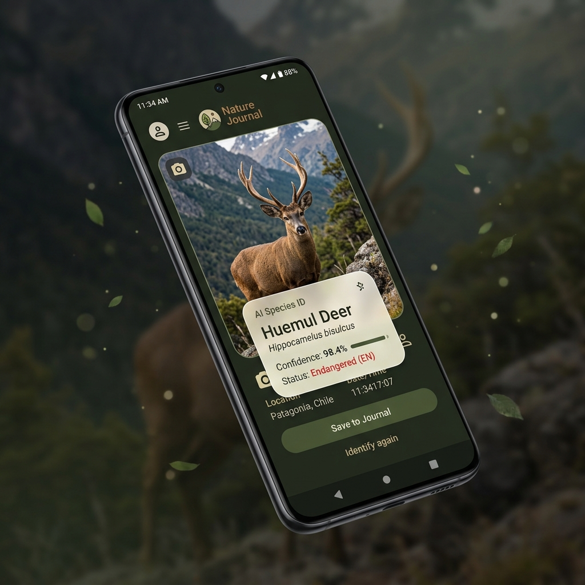
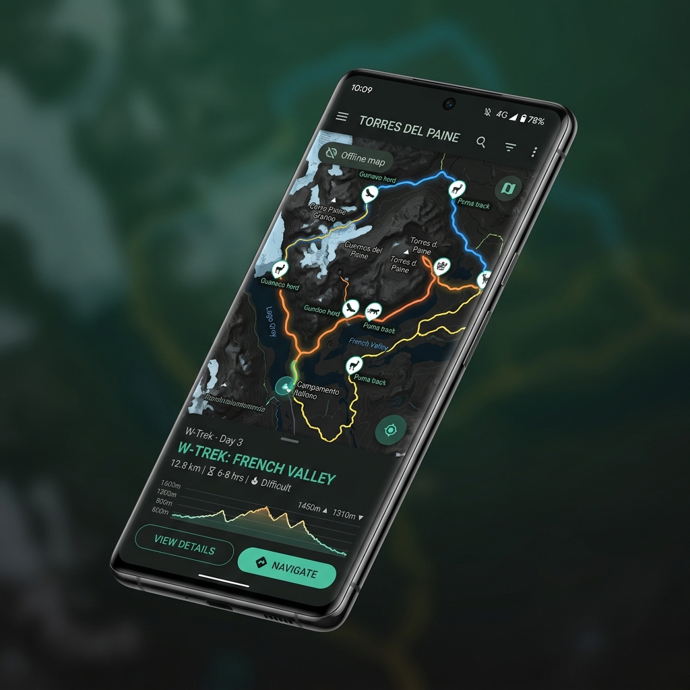
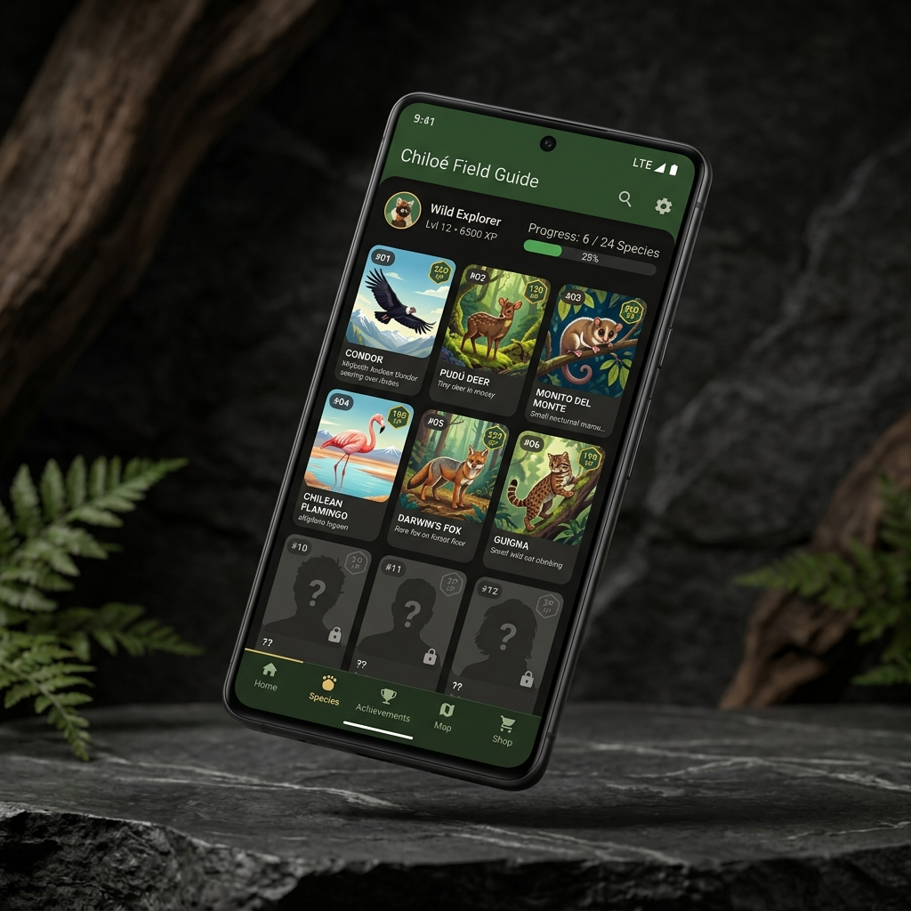

Sin senal en la naturaleza
Los parques y senderos son justamente los lugares donde mas necesitas informacion, pero donde menos puedes depender de internet.
Tu diario de naturaleza personal con inteligencia artificial. Identifica, registra y comparte especies de Chile incluso cuando estas en medio de la nada, sin internet.

El guion sigue intacto: la tension nace en terreno, donde la experiencia natural es enorme pero las herramientas digitales suelen fallar.
Los parques y senderos son justamente los lugares donde mas necesitas informacion, pero donde menos puedes depender de internet.
La gente ve flora y fauna chilena, pero no siempre sabe que esta mirando ni por que importa.
Las fotos quedan enterradas en el carrete, sin nombre, sin notas utiles y sin una bitacora que conserve el aprendizaje.
PataGOnIA une identificacion on-device, registro personal y una experiencia preparada para funcionar primero en el telefono.
El usuario apunta la camara o carga una foto y recibe sugerencias de especie directamente en el dispositivo.
Modelos, registros locales y mapas descargables estan pensados para salir a terreno antes de recuperar senal.
Cada captura guarda especie, foto, notas y contexto para convertir la caminata en aprendizaje.
Modelo descargable en el telefono para identificar especies sin depender de latencia o red.
Rutas y regiones descargables para preparar la salida y mantener orientacion en terreno.
Una bitacora viva que convierte especies descubiertas en progreso visible y educativo.
Sirve tanto para avistamientos en vivo como para fotografos que revisan material despues.
El modelo offline-first permite guardar primero y sincronizar cuando vuelva la conectividad.
La vision es transformar avistamientos en una capa colaborativa de biodiversidad local.
Esta slide mantiene el loop central que ya ensayaron: camara, mapa y guia visual.
Camara con sugerencias de identificacion y confianza.

Rutas, regiones y pins de avistamientos.

Especies desbloqueadas como motivacion educativa.
Mercado global impulsado por trekking, ecoturismo y aprendizaje con tecnologia movil.
Region con parques, turismo de aventura y ecosistemas reconocidos internacionalmente.
Primer mercado alcanzable para validar uso, retencion y alianzas de terreno.
Buscan una salida mas educativa, simple y memorable.
Quieren registrar y clasificar fotos de campo con contexto.
Aportan conocimiento, validacion y uso en salidas educativas.
Visitan Chile buscando naturaleza, pero necesitan contexto local.
Disenos de fauna chilena, gear y productos conectados con la identidad de la app.
Ingreso directoCampana con acceso anticipado y recompensas para early adopters outdoor.
Capital semillaEducacion ambiental, conservacion y turismo sustentable como puertas de entrada.
Publico / privadoMarcas, operadores turisticos y parques para contenido, activaciones y distribucion.
B2BLenguaje principal Android.
Interfaz declarativa Material 3.
Inferencia local para especies.
Persistencia local offline-first.
Inyeccion de dependencias.
Rutas y regiones offline.
Descarga de modelos y recursos.
Pipeline de camara optimizado.
Arquitectura por capas, Room, repositorios, casos de uso e inyeccion con Hilt.
CameraX, modelo on-device, descarga de recursos y flujo de revision de avistamiento.
Mapbox, presets de parques, gestor de regiones y pins de capturas.
Autenticacion, sincronizacion al recuperar senal y capa comunitaria de avistamientos.
Guia coleccionable, progreso, logros y motivacion educativa sin estetica infantil.
PataGOnIA conecta tecnologia, naturaleza y educacion ambiental para que cada caminata tenga mas valor, incluso sin senal.
PataGOnIA - Power Pitch 2026